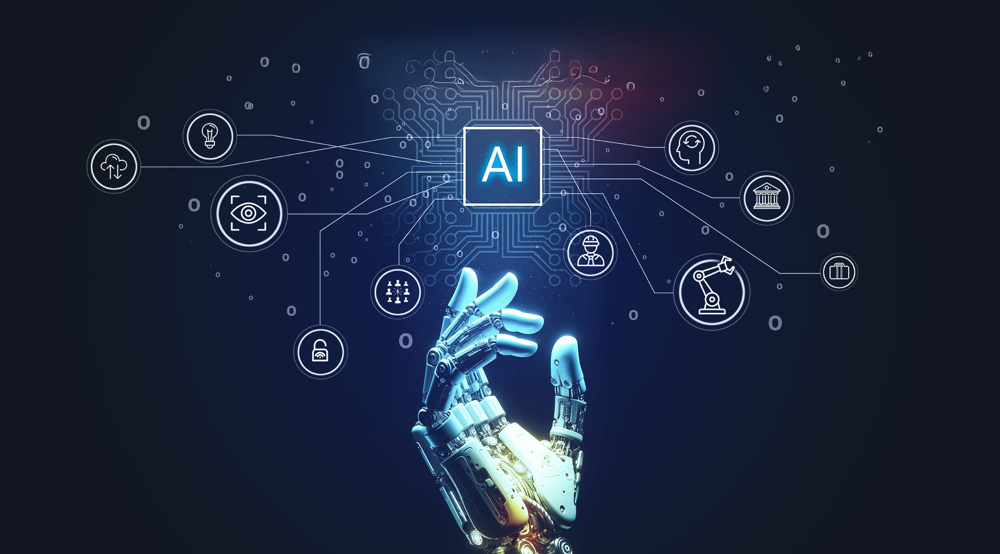
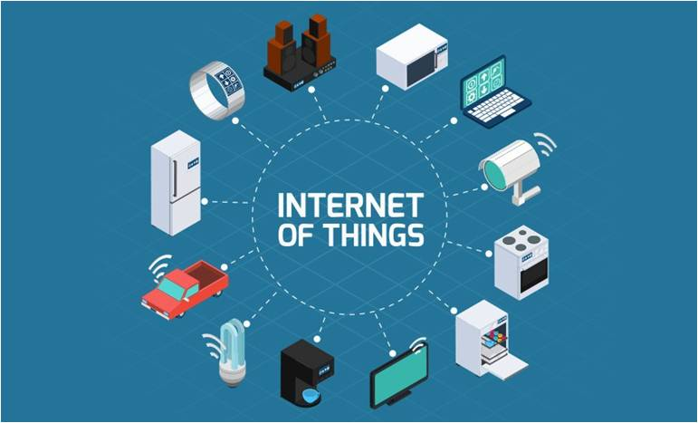
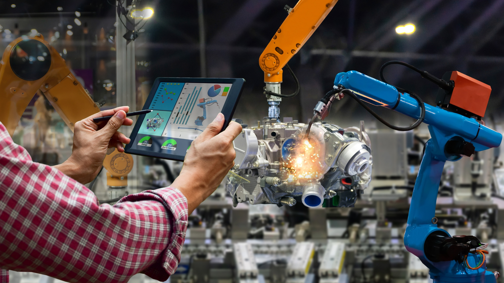

Emerging technologies are new and modern technologies that are starting to change how we live, work and talk to each other. They are not used everywhere yet, but they have big chance to improve many areas of life. These technologies usually bring together computers, data and networks to make smarter and easier solutions for everyday problems.

Artificial Intelligence refers to computer systems that can learn, think and make decisions like humans. AI help to automate tasks, improve accuracy and process large amounts of data quickly. A common example is voice assistants like Siri or Google Assistant, OpenAI which respond to questions and help users complete tasks.

The Internet of Things connects everyday devices to the internet so they can collect and share information. IoT makes homes, cities, and industries smarter and more efficient. A popular example is smart home systems, where users control lights, fans and security from their phones.
Blockchain is a secure way to record digital information so it cannot be changed or hacked easily. It keeps data safe so people can trust online payments. Best example is uses in cryptocurrencies like Bitcoin for use blockchain to keep payments safe.
Virtual Reality uses technology to create a computer generated environment that feels real. People use special headsets that show 3D worlds around them. VR is widely used in gaming and training, like games that place players inside virtual worlds.
Augmented Reality (AR) shows digital things on top of the real world using a phone or smart glasses. It makes what you see more interesting and can help with learning, games, and other activities. A famous example is Pokemon GO, where digital characters appear in real locations.
5G is the newest generation of mobile networks that offers faster internet speeds and less delay. It supports advanced technologies like smart cities, self driving cars and remote surgeries. Devices using 5G networks can download movies or apps much faster than before.

Robotics involves machines designed to perform tasks automatically, faster and more accurately than humans. Robots are used in homes, factories and healthcare. A simple example is a robot vacuum cleaner, which cleans floors without human help.
Quantum computing is an advanced type of computer that can solve very complex problems extremely fast. It has the potential to transform science, security and medicine. Companies like IBM and Google are developing quantum computers for future use.
Autonomous vehicles are cars, drones or machines that can move and operate without human drivers. They use sensors, cameras and AI to understand and navigate environments. Examples include self driving cars developed by companies like Tesla and Waymo.
Emerging technologies bring new and better ways to solve problems in daily life and work. They help businesses work faster, improve safety and reduce time and cost.
Better productivity - Machines and software can do tasks faster than people.
Improved healthcare - Technology can help doctors find problems early and treat patients better.
Smarter decision making - Data and AI help organizations make accurate and quick decisions.
More convenience - Online services make shopping, learning, and communication easier.
New job opportunities - Future technologies create new careers and skills.
Environmental benefits - Smart systems reduce waste and save energy.
Emerging technologies bring many benefits, also have challenges. They can be expensive, need special skills and collect personal data that must be protected. Technology changes fast, old skills may become outdated and relying too much on machines can cause problems. Ethical issues, like AI decisions or job loss from automation, also need attention.
Emerging technologies are important because they change the way we live, work and communicate. They make tasks easier, faster and more efficient, while helping businesses and individuals make better decisions. These technologies also create new opportunities, improve safety and more connected world. Understanding them is essential to keep up with the future and use technology safely and effectively.